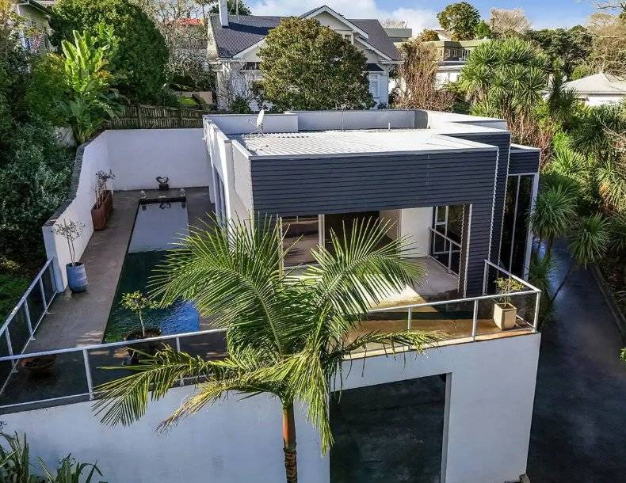
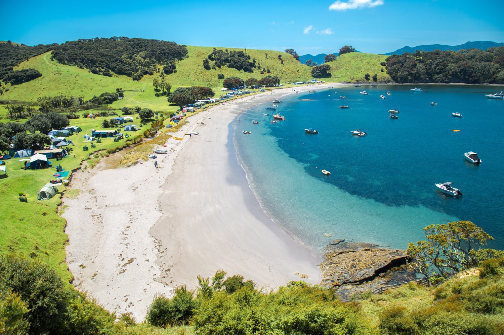
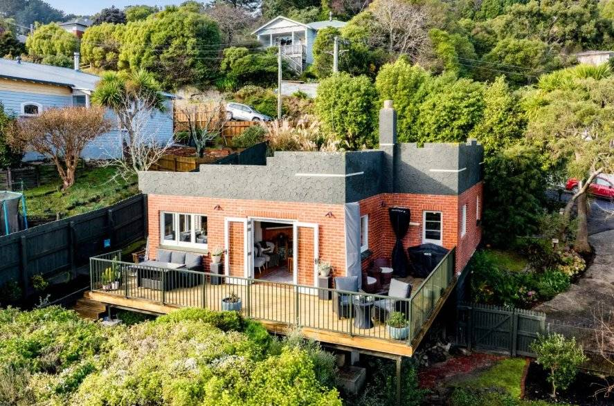

Moving to New Zealand
A new role, a different pace of life and somewhere new to call home.
Explore the practical details of moving to New Zealand, from working in healthcare and finding a home to schools, money and settling in.
Start with what you need today. Come back as your plans take shape.
What would you like help with?
These guides cover the essentials wherever you settle in New Zealand. Our regional guides cover the details specific to each place. Fourteen national chapters and thirteen regional guides, free to read, with nothing to sign up for.
Working in healthcare
Understand how healthcare is organised and the cultural context of working in New Zealand.
Money and your home
Plan your finances and understand the practical steps involved in finding a home.
Everyday life
Get to grips with schools, transport and the routines that shape daily life.
Preparing to move
Work through what to arrange, what to bring and what to do before departure.
Settling in
Organise the essentials, find your feet and start building connections.
New to New Zealand? Start with a country overview.
Three things worth knowing
The estimated resident population at 30 June 2026, across two main islands.
The legal minimum, once you have worked for the same employer for twelve months.
Eleven national public holidays, plus your region’s own anniversary day. You get the day paid if it falls on a day you would otherwise work.
Checked 26 September 2026 against Stats NZ and Employment New Zealand. Anything that needs more explanation than a headline allows lives in the chapter it belongs to.
Where could you see yourself living?
A lively city, a coastal community or somewhere quieter with room to grow. Explore local healthcare workplaces, neighbourhoods, housing, schools and everyday life. Each regional guide focuses on the place and links back to the national guidance when you need it.

WaikatoExplore Hamilton and surrounding towns, with choices between city living and smaller communities.Explore Waikato → Bay of PlentyExplore Tauranga, Rotorua and surrounding communities, each with a different setting and feel.Explore the Bay of Plenty →
NorthlandExplore Whāngārei and communities further north, considering local services, travel distances and coastal life.Explore Northland → Hawke’s BayExplore Napier, Hastings and surrounding communities, with practical guidance on where to live and work.Explore Hawke’s Bay → Palmerston NorthExplore Palmerston North and the Manawatū, from city neighbourhoods to nearby towns and rural communities.Explore Palmerston North → Nelson TasmanExplore Nelson and the Tasman area, considering local work, coastal communities and outdoor activities.Explore Nelson Tasman →
DunedinExplore a university city with distinctive neighbourhoods, coastal surroundings and healthcare opportunities.Explore Dunedin → Central Otago & Queenstown LakesExplore Queenstown, Wānaka, Cromwell and Alexandra, weighing housing, local services and suitable work opportunities.Explore Central Otago → SouthlandExplore Invercargill and wider Southland, with practical information about housing, work and regional life.Explore Southland → GisborneExplore the coastal city and surrounding communities, considering local opportunities and travel connections.Explore Gisborne →Keep your options open
Some locations attract far more applicants than others. That does not necessarily make them a better fit for you.
Focusing on one popular city can mean fewer suitable vacancies and a longer wait. Exploring several locations gives you more scope to find a role and a community that suit your household.
Start with what matters to you, then consider where those priorities meet realistic job opportunities. We will be honest about where we can help and where you may need more flexibility or time.
A guide to a region does not mean we are recruiting there right now. The guides are for exploring; the jobs page shows what is open.
Make room for life beyond the move
There’s more to settling in than getting the paperwork done.
Think about how you’ll meet people, keep in touch with home and make time for the things you enjoy. If you’re moving with others, include their hopes and concerns in the planning too.
You don’t have to feel at home immediately. Give yourself time to build routines, friendships and familiarity.
Thinking about making the move?
You don’t need a fixed moving date to start a conversation.
Tell us about your profession, who would be moving with you and what you’re hoping for. We’ll help you explore suitable opportunities and the practical questions that come with them.